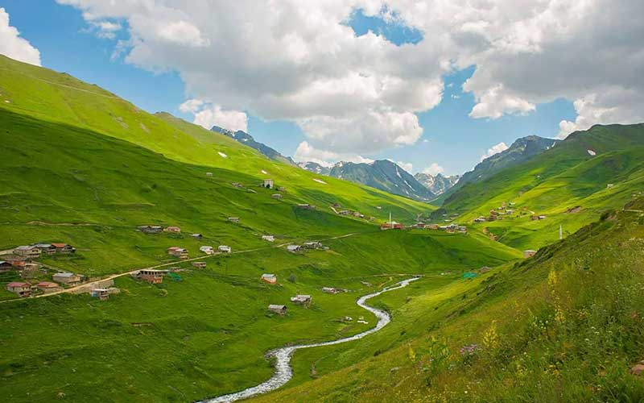

Anzer Yaylası,Rize'nin İkizdere ilçesinin 35 km güney batısında kalan bir yayla. Aşağı Anzer (Çiçekliköy) ve Yukarı Anzer (Ballıköy) olmak üzere ikiye ayrılır. Rize il merkezine 54 km mesafededir. Balıyla ünlü olan yayla aynı zamanda önemli bir ekoturizm alanıdır.
Doğal güzelliğinin ve Anzer balı merkezi olmasının yanı sıra çok sayıda endemik türde çiçeğe de ev sahipliği yapması nedeniyle yerli ve yabancı turistleri bölgeye çekmektedir. 1991 yılında bakanlar kurulu kararıyla turizm merkezi ilan edilmiş olup 3 bin metreyi aşan doruklara ve 2 bin metreye kadar yükselen ormanlara sahiptir.
Ayrıca, alternatif turizm aktivitelerinden trekking, yamaç paraşütü ve zirve tırmanışları için de uygun olup bir taraftan Çoruh Nehri ve Bayburt iline, diğer taraftan da, Uzungöl Turizm Merkezine ulaşım olanağı sağlar. Yaylada her yıl ağustos ayının birinci haftasında Anzer Balı ve Yayla Şenlikleri düzenlenmektedir.
